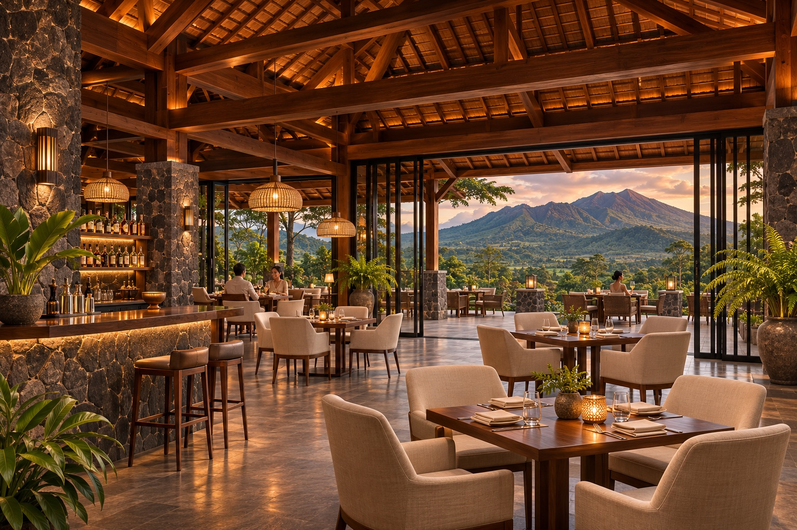
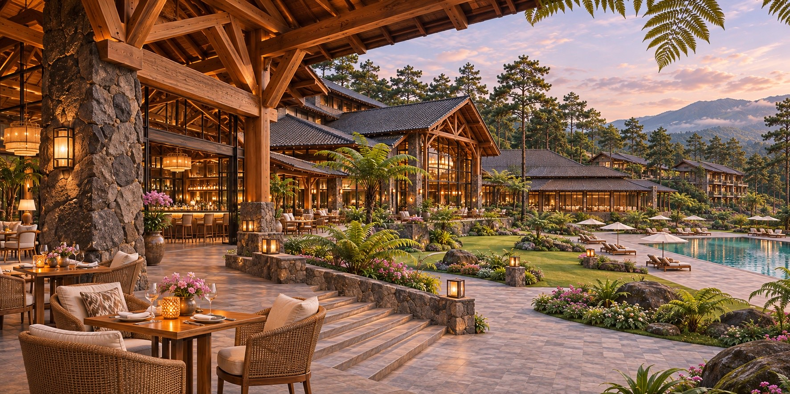
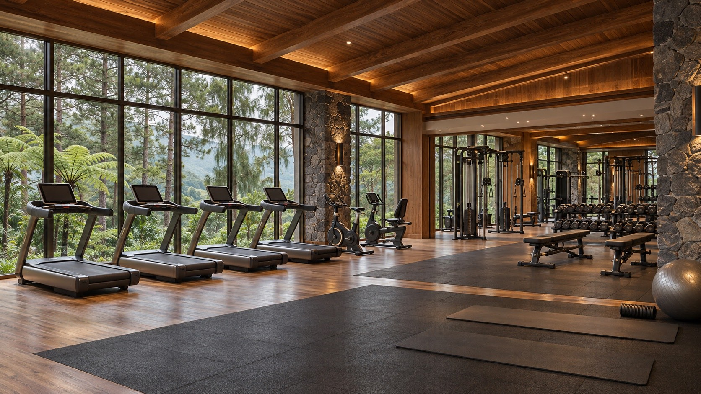

The grand lobby
A generous arrival hall with lounges, sheltered connections and a warm sense of place.

The Main Lodge / Mount Paradise
Stone, timber and garden rooms. The social heart of the destination.
A family of connected spaces
Layered rooflines and garden courtyards break the Main Lodge into welcoming places: a grand lobby, dining and bar spaces, a café, conference facilities and a quieter hotel wing. Deep verandas connect the architecture to the landscape.
Restaurant / Bar

The restaurant carries the rich stonework and exposed timber of the Main Lodge into a comfortable dining room. A generous bar creates a natural place to meet before dinner.
Terraces extend the room into the gardens, with sheltered tables, soft lighting and space to linger.

Coffee / Conversation / A slower morning
The café opens onto a generous terrace, with small tables, comfortable chairs and a view into the gardens. Come for breakfast, a book, or a second cup.
Textured stone, warm timber and small pockets of flowers keep the setting quietly distinctive.
The lodge, throughout the day
A generous arrival hall with lounges, sheltered connections and a warm sense of place.
Dedicated spaces for working sessions, private dining, conferences and celebrations.
Rooms and suites envisioned in quieter wings, with balconies and garden outlooks.

Fitness within the facility
An indoor fitness center forms part of the Main Lodge facility, with cardio, strength and movement spaces looking into the greenery.
Explore wellnessYour next chapter
Ask about stays, dining, gatherings or the wider destination.